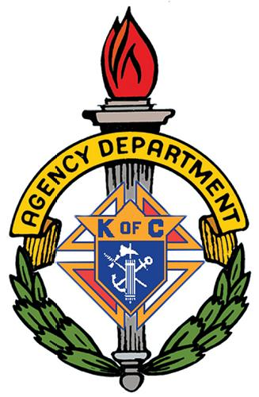

Father McGivney understood that the first duty of a Catholic husband and father is to his family - to care for their needs while alive and, to the best of his ability, to provide for their care in the event of his death. He also knew well the tragic needs of Catholic families of the deceased men in his community. Central to Father McGivney’s founding vision for the Knights of Columbus was providing for the financial security of Catholic families, particularly the widows and orphans of deceased members.
The first purpose listed in the Order’s 1882 charter is “rendering pecuniary aid to its members, their families, and beneficiaries of members and their families.” The establishment of a financially sound insurance program for members of the Order was a primary goal. Today, lack of adequate financial resources is still a great threat to family life. Now, more than ever, the Knights of Columbus continues to address the temporal needs of Catholic families, especially through one of the most highly-rated insurance programs in the world.
The corporate charter of the Knights of Columbus, granted by the Connecticut General Assembly on March 29, 1882, provides that: “The purposes for which said corporation is formed are the following: (a) of rendering pecuniary aid to its members, their families and beneficiaries of members and their families; (b) of rendering mutual aid and assistance to its sick, disabled and needy members and their families; (c) of promoting social and intellectual intercourse among its members and their families; and (d) of promoting and conducting educational, charitable, religious, social welfare, war relief and welfare, and public relief work.”
The Knights of Columbus meets the goals of this charter by sponsoring council activities, by providing assistance to the Catholic Church, by doing charitable work in the communities where we exist, and by offering high-quality, individual life insurance to its members and families.
Father Michael J. McGivney - our founder - recognized and believed that the people of his day needed the protection that a life insurance program would bring. He wanted to guarantee that the Catholic widow and children of his time would be able to sustain the loss of their breadwinner, and continue with a life not afflicted with poverty and despair.
Today, 119 years later, the Knights of Columbus goal remains the same: protection of the Catholic families that choose membership in our Order.
(Reprinted from the Supreme Council on August 3, 2002:)
In the days of Father McGivney, the insurance feature was a rudimentary system of collecting money and distributing benefits. Today it encompasses more than $31 billion of life insurance in force, with more than 1.3 million individual policies. A professional and knowledgeable agency field force numbering 1,350 brings the program to the home of every eligible Knight, tailoring a plan of life insurance coverage to meet his family’s individual needs.
The Knights of Columbus insurance program has provided peace of mind to millions of men and women for more than a century. The continuing growth of the number of policies and the insurance in force is a testament to the confidence members have in the Order’s ability to provide protection for them today, and well into the future.
The Knights of Columbus sells its insurance to its members, wives of members, and dependents. It is sold through a career sales force that currently consists of more than 1,350 full-time professionally trained field agents.
These agents are equipped with one of the most modern computer programs available. It enables them to perform a needs analysis of the member and his family. This needs analysis allows the agent and the Knight to determine together the total amount of insurance protection needed, and calculate the best way to package the products to meet those needs.
Our products have been “Protecting Families for Generations.” We would like nothing better than to have the opportunity to help you protect your family.
Read About Our Insurance Program at the Knights of Columbus Insurance Web site by clicking here.

© Knights of Columbus - Kansas State Council
For comments or questions please email webmaster@kansas-kofc.org